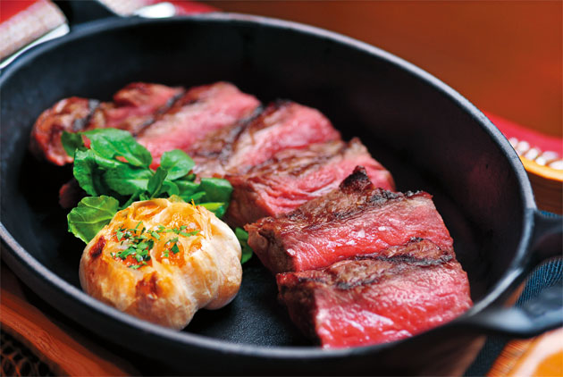

戰斧牛排
菲力牛排
濕式熟成牛排
乾式熟成牛排
乾式熟成牛排
早年美國、加拿大一帶的居民捕狩到野牛後，一時之間吃不完就把肉塊置於自然環境中風乾，當地乾冷的氣候正適合保存，等過了一段時間再吃發現牛肉風味更佳，乾式熟成技術就被流傳了下來。
乾式熟成就需花費較多的力氣和成本。將牛肉分切後，外表不加包裝，靜置於攝氏0度上下、濕度50～85％的恆溫、恆濕且保持空氣流動的熟成室中，利用牛肉本身的酵素和外在的微生物作用，熟成20～45天不等；在具有紫外線殺菌器的冷藏熟成室，仰賴專業人員監控熟成狀態，熟成到可上市時整體重量會減少約3成，最後可烹煮的部分只剩下7成左右。
